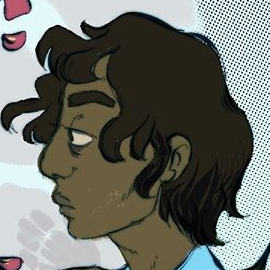
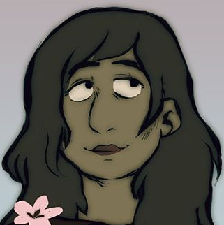
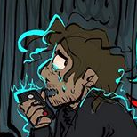
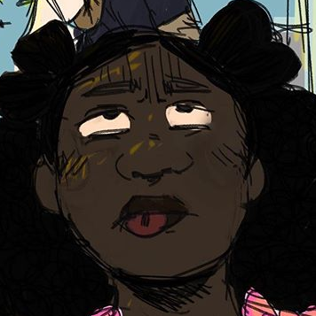

Deen Harborache
Age: 30
Gender: Trans Man (He/Him)
Occupation: Security at Hillington High
Bio: Deen is one of the two known survivors of the killer known as the "Hazy Days Killer." When he was 6, he witnessed a murder suicide that left him and his sister as orphans. He did not fully acknowledge the deaths of his parents until he turned 16, when remembering his trauma began to seriously conflict with the depression, anxiety and undiagnosed autism and ADHD that he experienced on a daily basis. He was sent to military school for his 11th year, then promptly kicked out and graduated from Hillington High.
EGO
Age: Unknown
Gender: None (He/Him)
Occupation: The "Hazy Days Killer", None
Bio: EGO is a shadow demon that has plagued Hillington for years. The mystery of the Hazy Days Killer never really mattered, because the issue was never whodunnit, but how to stop them. Needless to say, EGO has slipped away countless times as a result. His method of action is possessing of the flesh and comitting cannibalistic murder suicides in order to destroy families, as he feeds off the resulting emotional turmoil. EGO is picky about the people that he eats, and being caught in the middle of his act by Deen and Marina when they were young forced him to end his trail of terror quickly and go dormant. He's awoken again now, and it's just a matter of time before he strikes again.
Marina Harborache
Age:32
Gender: Trans Woman (She/Her)
Occupation: Counselor at Hillington High
Bio: Deen's older sister by two years, Marina is a simple woman with simple goals. After the deaths of her parents, she repressed every memory she had from childhood and refuses to revisit those days, regardless of her brother's opinion. She graduated high school at 18 years old, went to college for a teaching degree and returned to Hillington High to work as a counselor. She only cares for the futures of others and would rather not look back on the past.
Neil Edwards
Age: 32
Gender: Trans Man (He/Him)
Occupation: English Teacher at Hillington High
Bio: Neil is Deen's husband and former classmate at Hillington High. He has a debilitating fear of death and a passion for fiction and analysis, trying to take life one step at a time. He left Hillington to attend college out of state, returning to teach at the request of former staff. He met Deen again through a mutual friend and has stuck with him and Melly ever since.
Melly Decks
Age: 16
Gender: Nonbinary (She/Her)
Occupation: Student
Bio: Melly is a sister-figure to Deen. She was left in the care of her grandfather when she was 2, growing up with Deen and Marina as her adoptive sibling figures along with her biological aunts. She currently lives with both Deen and Neil as an arrangement between the three and her grandfather so she could experience the world from a new perspective. Melly is a curious and intelligent individual, born with the ability to see the undead.